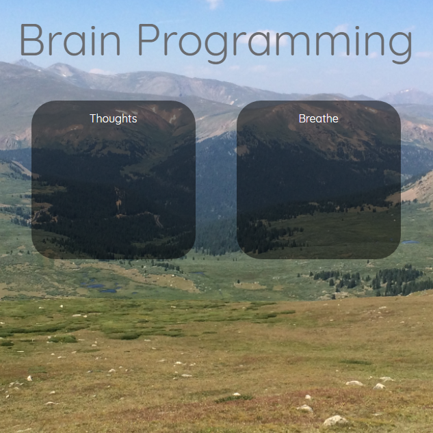

This Portfolio Site!
- HTML, CSS, JavaScript
- This has been a great learning experience!
- I got to practice using tables, lots of CSS, and some JavaScript.
- The most satisfying part was definitely JavaScript on the home page!


Personal Deep Breathing Project
- HTML, CSS, JavaScript
- In Progress!
- This is a personal project that I’m really enjoying.
- Animating the circle on the “Breathe” page was fun. I’m very satisfied with the outcome!

Windows Directory Reporters
- Python
- This project was for my previous job.
- Our business analyst needed something that could report on the contents of our huge shared drives.
- The original project was so successful, it quickly spurred several versions that all report on different metadata.
Data Scrubber
- Python
- This project was also for my previous job.
- While moving data from an old Access database into a new application, it became apparent that the original data wasn’t organized well. Each record didn’t have a unique identifier—in many cases several records were combined into one, with their IDs run together in one string separated by a range of different characters. This script cleans up the data, separating each unique identifier into its own record.
- Splitting out those strings by a list of different characters gave me a great opportunity to try out recursion—something I had just been learning about!